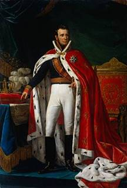
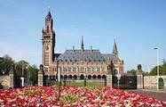
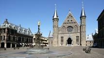
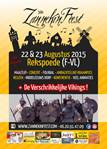

> nieuwsbrief
> 33e jg. - 4e trimester 2015
| Bijdragen over: |
Wie zijn bijdrage voor het jaar 2015
vereffende kon ondertussen al uitgebreid kennis nemen van de
inhoud van ons 37e jaarboek De Nederlanden ‘extra
muros’. Wie dit tot nog toe naliet kan z'n
vergetelheid kan alsnog rechtgezet worden door overboeking van
29 € op een van onze rekeningen. Het jaarboek De Nederlanden ‘extra
muros’ 39 (2015) wordt hem of haar dan
stante pede toegestuurd na boeking van de bijdrage.
Het jongste nummer van het Bulletin
des Amis de Jean Mabire is quasi volledig
gewijd aan diens contacten met de zuidelijke Nederlanden. Jean
Mabire (1927-2006) was een Normandische auteur en regionalist
met tal van vrienden en contacten in Vlaanderen. In het
betreffende nummer (nr. 45 – Solstice d’été 2015) werd ook een
uitgebreide bijdrage opgenomen gewijd aan de Frans-Vlaamse
voorman priester Jean-Marie Gantois.
In een volgend nummer van de Zannekin-Nieuwsbrief komen we daarop uitgebreid
terug. Hierbij
alvast de contactgegevens van de Association des Amis de Jean
Mabire: www.jean-mabire.com Adres: 15, route de Breuilles, F. 1730 Bernay
Saint Martin.
Forum
Vlaamse Vrouwen - Stichting Zannekin
Weekeinde
Den Haag in de voetsporen van Willem I
op 30 en 31
oktober & 1 en 2 november 2015
De 200e verjaring van
de troonsbestijging van Willem I grijpen we aan om een
aantal activiteiten 'In
de voetsporen van Willem I' te organiseren, zo ook een
weekeinde in Den Haag, Delft en Scheveningen
CONTACT: FVV-Nationaal: 09 223 38
83 - info@vlaamsevrouwen.org
30
en 31 oktober & 1 en 2 november 2015
In het raam van Koning
Willem I – Weekeinde In Den Haag met drie overnachtingen
(twee volle dagen).
Vrijdag
30 oktober:
Ieder
op eigen houtje (trein of auto) naar Den Haag (hotel Mercure Den Haag
Centraal - Spui
180,- 2511 BW ’s-GRAVENHAGE
–Nederland – Tel. (+31)70/2039002)
–
20.00 uur welkomstdronk – overnachting.
Zaterdag
31 oktober:
Ontbijtbuffet – dagkaart
HTM-tram. Voormiddag en middag in Delft (Prinsenhof, Nieuwe Kerk,
wandeling door de historische stadskern) – vrije lunch.
Namiddag in Den Haag (Haagse Binnenhof met
Ridderzaal, Willem één–boekententoonstelling in de Koninklijke
Bibliotheek, vrije
tijd of gegidste wandeling door de stad).
19.00 uur: vriendenmaal met
verbroedering – overnachting

Zondag
1 november:
Ontbijtbuffet - dagkaart
HTM-tram.
Voormiddag even uitwaaien in Scheveningen
(plaats waar Koning Willem
I aan wal kwam) – vrije lunch.
Namiddag in Den Haag –
(wandeling langs het
Vredespaleis, het Plein 1813, het Panorama Mesdag en andere
bezienswaardigheden – keuze tussen een bezoek aan het
Mauritshuis met zijn rijke collectie schilderijen of het
Gemeentemuseum voor de tentoonstelling “Ode aan de Nederlandse mode”).
18.30 uur - vriendschapsborrel
en vrij avondmaal – overnachting.
Maandag
2 november:
Ontbijtbuffet – iedereen keert
op eigen houtje huiswaarts of neemt nog een dagje deel aan
“ludiek Den Haag” en keert dan huiswaarts.
PRIJS:
295,00
€uro per persoon. In deze prijs zijn begrepen: 3
overnachtingen in dubbelkamer, 3 x ontbijtbuffet, 1 avondmaal
op zaterdag, toegangen, HTM-tram-dagkaarten, stadsbelasting,
gidsen; niet inbegrepen overige maaltijden en drank bij
zaterdag-diner) 50,00 €uro toeslag voor eenpersoonskamer; tot
en met 15 jaar: 150,00 €uro.
Wil voor deelname het hoger vermelde
FVV-contactadres benutten.
Henegouwen aan weerzijden van de Schreve, met de klemtoon op Bergen/Mons (in 2015 Culturele hoofdstad)
Onze ZANNEKIN-Nieuwsbrief
is een driemaandelijkse uitgave, waarvan het 4e nummer eerst
aanvang oktober kan verschijnen. Dit was rijkelijk te laat om
u de gegevens mee te delen van onze Studie-uitstap
die al op zaterdag 3 oktober
plaatsvond. Daarom ontvingen de ZANNEKIN-leden onderstaande
gegevens per omzendbrief.
Om 11.20 uur was er een
rondleiding door de stad Bergen/Mons met de Sint-Waldetrudis-collegiale,
het Belfort, de Grote Markt met het Stadhuis.
Als
middagmaal genoten we van een lekkere Bergense specialiteit, een
“côte al berdouille”, in het restaurant “Le Carillon”.
Vanaf
14.00 uur was er een rondrit met de bus naar Boussu met het
mausoleum (*) in de kerk en naar de Frans-Henegouwse stad Condé-sur-l’Escaut met
haar talrijke monumenten en bekende figuren. Nog een vrije pauze
voor koffie of andere consumptie als afsluiter.
Verzamelplaats voor alle
deelnemers was Bergen: rue du Chapitre bij het
standbeeld van Roland de Lattre / Lassus aan de voet van de
Sint-Waldetrudiscollegiale (Sainte-Waudru) om 11.15 uur. Men kon
ook rechtstreeks naar Bergen sporen of rijden.
_______________
(*)
Mausoleum van Jean de
Hennin de Liétard (1499-1562), de eerste graaf van Boussu. Hij
was grootstalmeester van Keizer Karel en echtgenoot van Anna
van Bourgondië, de achterkleindochter van Filips de Goede.
De Belgicistische geschiedschrijving
Op
21 september 2015 was het 200 jaar geleden dat Willem-Frederik,
in Brussel, ingehuldigd werd als koning Willem I van het
Verenigd Koninkrijk der Nederlanden (koning sinds 16 maart
1815). Met die verjaardag in het verschiet roeren voor- en
tegenstanders van België zich nog eens extra. In Gent wil men
koning Willem bedanken voor zijn beleid dat ontegensprekelijk
voor Gent een weldaad was (stichting van de rijksuniversiteit en
aanleg van het kanaal Gent-Terneuzen, om maar twee spectaculaire
realisaties op initiatief van koning Willem, op te noemen).
Andere vinden dan weer dat de zwakheden van de koning nog maar
eens belicht moeten worden: hij was tijdens de Franse bezetting
een opportunist die er niet voor terugschrok met Napoleon zoete
broodjes te bakken. Eenmaal aan de macht gedroeg hij zich als
een despoot naar het model van keizer-koster Joseph II. Hij was
een woekeraar, een twijfelaar, etc. In de grond is die discussie
niet belangrijk; elke medaille heeft twee kanten. Van de
grootste figuren uit de geschiedenis kan men, met wat veel of
weinig zoeken, kleine kantjes blootleggen. De categorie van de
heiligen buiten beschouwing gelaten, uiteraard.
Interessanter
is het even stil te staan bij de grove geschiedenisvervalsing
door belgicistische “historici” van de 19e eeuw (Henri Pirenne
en Cie.) i.v.m. het ontstaan van de Belgische staat en de rol
die Willem I daarbij gespeeld heeft. Hun tot op heden nog steeds
populaire voorstelling van de gebeurtenissen komt hierop neer
(eigenaardig genoeg, zowel in België als in Nederland). België,
waarbij ze niet aarzelen de wording van België te laten
teruggaan tot de middeleeuwen, of zelfs tot de Romeinen, wordt
na de slag bij Waterloo, gekoloniseerd door de
Noord-Nederlanders, de verfoeide “Hollanders”. Zij leggen hier
hun wetten op, plunderen de staatskas om de schulden van het
Noorden af te lossen, proberen de katholieke godsdienst te
vervangen door het Calvinisme en tot afgrijzen van de betere
bevolkingsklasse, willen
ze
het Nederlands opleggen als bestuurstaal. Daar tegen komen de
Belgische revolutionairen in opstand en deze beweging wordt
volgens hen gedragen door brede volkssteun. De Belgische helden
treden, zoals dat helden past, heldhaftig op, verjagen het
Noord-Nederlands koninklijk leger en “bevrijden” de Zuid
Nederlanders die vanaf dan, zoals in het roemrijke verleden,
opnieuw fier de naam Belgen dragen.
De
eminente historica, Els Witte, gewezen rector van de VUB,
verwijst, met haar recent verschenen studie Het verloren koninkrijk,
het harde verzet van de Belgische orangisten tegen de
revolutie”, met feiten, namen en data, gesteund op uitgebreid
archiefonderzoek, het belgicistische verhaal naar het rijk van
de fabeltjes. (*)
Van
een Noord Nederlandse kolonisatie is geen sprake; het volledig
bestuurlijk apparaat, het leger in het Zuiden, het gerecht en de
industrie, worden in het Zuiden geleid door autochtone Zuid
Nederlanders (op enkele uitzonderingen na waarvoor men in het
Zuiden geen geschikte kandidaten vond (universiteitsprofessoren
bv.), functies waarvoor dan maar Noord-Nederlanders, maar ook
Pruisen en Engelsen aangetrokken werden. De Noord-Nederlandse
gewesten, verre van zich met deze gang van zaken te bemoeien,
bekeken het beleid van koning Willem met argwaan. Zij vreesden
concurrentie voor hun havens en hun wereldwijd handelsnetwerk,
zagen met lede ogen dat ook Zuid-Nederlanders toegang kregen tot
de koloniën en vreesden dat het hele avontuur hen teveel geld
ging kosten. Koning Willem was zowat de enige Noord Nederlander
die enthousiast aan de slag ging met het Verenigd Koninkrijk.
Koning
Willem kreeg daarbij de volle steun van de Zuid-Nederlandse
ambtenaren, officieren, industriëlen en zelfs van een deel van
de clerus.
Als
in september 1830 de troebelen losbarsten, betuigt de integrale
Zuid-Nederlandse elite haar trouw aan koning Willem, ook als zij
in de eerste plaats geviseerd wordt en zij het slachtoffer wordt
van de revolutie. Zij vormen vanaf dan de orangistische
beweging. Maar laat er geen misverstand over bestaan, deze
orangisten zijn niet de voorlopers van de latere Vlaamse
Beweging en spelen ook geen rol in het ontstaan en de eerste
stappen van de Vlaamse Beweging, op enkele uitzonderingen na,
Jan Frans Willems bv. Het orangisme was volledig Franstalig en
de leden ervan kwamen uit alle provincies van wat we nu Wallonië
en Vlaanderen noemen. Orangisten hadden dus wel kritiek op de
taalpolitiek van de koning maar dat deed geen afbreuk aan hun
loyaliteit. Voor hen was de koning het wettig gezag en de band
met de Verenigde Nederlanden. Helaas is later gebleken dat deze
gepersonaliseerd band een belangrijke zwakte was bij de
instandhouding van de Verenigde Nederlanden. Om die reden was
ook de hetze van de belgicisten tegen de persoon van koning
Willem zo hevig.
Waar
kwamen de revolutionairen van de septemberdagen dan vandaan?
Tuig, een bende schurken, begeleid door avonturiers infiltreerde
het land vanuit Frankrijk met de bedoeling hier een nieuwe
Franse staat op te richten. Liberale advocaten en journalisten
zagen er een opportuniteit in om hun maatschappelijke
denkbeelden, het liberalisme van de 19e eeuw, in de praktijk te
brengen, en bezorgden aan de plundering van onze gewesten een
doelstelling. Uiteraard maakten zij handig gebruik van de
verpaupering van het gewone volk en de sociale onrust die
daarmee gepaard ging. Men zal het ondertussen wel begrepen
hebben: soortgelijke “revoluties” maken we vandaag mee in Oost
Oekraïne, Syrië en Irak. Ons verhaal over 1830 is 185 jaar oud,
maar het doet heel modern aan. Alleen namen en plaatsen zijn
veranderd. Het bandietenleger liquideert, vanaf september 1830,
zonder pardon, het volledige Zuid-Nederlands bestuurlijk
apparaat. De techniek die daarvoor gebruikt wordt, hebben we
daarna in de Belgische context, nog een paar keer mogen ervaren:
lijsten van te liquideren personen, intimidatie, meubels op
straat gooien, huizen plunderen en in brand steken… uiteindelijk
broodroof. Van een breed gedragen volksopstand is in 1830 geen
sprake. Een ruime meerderheid van de bevolking blijft de koning
trouw. Dat blijkt in het bijzonder uit de verkiezingen na de
revolutie: ondanks intimidatie en vervalsing stemmen de kiezers
voor de orangisten.
Hoe
is het dan kunnen mislopen? Een hele reeks factoren speelden
mee. De Zuid Nederlandse elite was overtuigd van de
wettelijkheid van haar bestuur en rekende op de kracht van haar
band met koning Willem. Dit ambtenarenkorps was helemaal niet
opgewassen tegen bendes schurken die, met geweld en minachting
van de wettelijkheid, brutaal de ambtenaren uit hun ambt
verdreven. De gewraakte ambtenaren doken onder, vluchten naar
het buitenland of keerden zich, gedegouteerd, af van de
politieke strijd. Zij vroegen bijstand aan de koning, kregen
deze ook in de vorm van geldelijke steun, maar dat was in deze
omstandigheden ondoeltreffend. De koning was naïef (hij sprak
over de infiltranten/opstandelingen als “nos frères égarés”), te
weinig vastberaden en vond in het Noorden geen steun voor een
krachtig (militair) antwoord op de indringers. De kroonprins (de
Prins van Oranje), een wispelturige opportunist met een troebele
levenswandel, vond er niet beter op dan de politiek van zijn
vader te ondermijnen, uit vals begrepen ambitie. In volle
opstand kandideerde hij voor de Belgische troon.
De
houding van de bondgenoten was doorslaggevend en nefast.
Pruisen, Oostenrijk en Rusland (de echtgenote van de Prins van
Oranje was de zuster van de tsaar) steunden koning Willem
slechts met mondjesmaat. Militaire bijstand zat er niet in omdat
ze in eigen land met moeilijkheden geconfronteerd waren. De
handtekeningen van twee andere grote mogendheden op het Congres
van Wenen, Frankrijk en England, bleken niet veel waard te zijn.
Zij gooiden het op een akkoordje om koning Willem de figuurlijke
dolk in de rug te planten. Zij dachten uit de verbrokkeling van
de Nederlanden voordeel te kunnen halen. Helaas, een derde
partij, Duitsland, meende te kunnen profiteren
van
de zwakte van de Nederlanden, om via België Frankrijk aan te
vallen.
Tienduizenden
Franse en Britse jongens hebben in de grote oorlog van 1914-18
de Frans-Britse strategische blunder van 1830 met hun dood
betaald.1
Het
orangisme heeft na 1830 nog 20 jaar teruggevochten en zelfs een
paar pogingen tot staatsgreep ondernomen om het wettelijk gezag
te herstellen. Helaas tevergeefs. De twijfelende houding van de
koning die daarenboven de steun van de noordelijke provinciën
moest ontberen, deden deze pogingen tot staatsgreep, en (toen
het te laat was, gelet op de geopolitieke situatie) zelfs een
militaire invasie, mislukken. 1830 kwam dus duidelijk niet tot
stand op basis van een algemeen ongenoegen in de Zuidelijke
Nederlanden, want de Zuid-Nederlandse elites, zowel in
Vlaanderen als in Wallonië, apprecieerden in ruime meerderheid
het welvaart brengend beleid van de koning. En terecht, want in
15 jaar heeft deze, ook al was hij dan een verlichte despoot,
meer gedaan voor de ontwikkeling van onze gewesten met de aanleg
van wegen en kanalen, de aanmoediging van nieuwe industrieën, de
stichting van twee universiteiten en de inrichting van een
degelijk scholennet, dan de Coburgs in de daarop volgende 150
jaar. Helaas, de feiten zijn wat ze zijn, maar de gelijkenis met
sommige conflicten vandaag is opvallend.
Men
beweert dat de geschiedenis zich herhaalt totdat wij het
verleden goed begrepen hebben. De waarheid heeft haar rechten en
geschiedenisvervalsing draagt niet bij tot een goed begrip van
wat er in het verleden is gebeurd. Dit alles in het bijzonder
ter overweging van de naïeve Vlaamse politici die straks,
handjes schuddend en schouderklopjes gevend, de septemberdagen
van de Franse gemeenschap (die feestdag is op 27 september) mee
gaan vieren. Zo weten zij tenminste wat er dan gevierd wordt.
___________________
(*) Els Witte: Het verloren koninkrijk –
Het harde verzet van de Belgische orangisten tegen de
revolutie 1828-1850, 687 blz. uitg. De Bezige Bij
Antwerpen, 2014.
1 Nota
Willy ALENUS: Ik ben niet akkoord met de stelling “dat Engeland en
Frankrijk voorzichtiger hadden moeten omspringen met de
“Belgische” onafhankelijkheid (1830-1831–1839) en meer hadden
moeten denken aan de slapende hond (Pruisen/Duitsland) die men
zou (kunnen) wakker maken.” Deze vergetelheid zou hebben
geleid, IN 1914- 1918, tot de aanval van Duitsland tegen
Frankrijk, dit keer met
door de “weerloze”
zuidelijke nederlanden
te trekken, wat o.a. tienduizenden jonge Belgische,
Britse en Franse levens zou hebben gekost. Deze strategie werd
inderdaad uitgebroed (het zogenaamde plan von schlieffen) en
succesvol ten uitvoer gebracht, en dat gebeurde indedaad in
1914. Waar zit dan de fout in de “eindconclusie” (zie
supra)? Die zit in de historische werkelijkheid =
Pruisen/Duitsland is inderdaad, van 1830 tot 1870, sterk
genoeg geworden om Frankrijk helemaal alleen aan te vallen in
1870/1871 (de eerste “percée de Sedan”), maar had het
kennelijk helemaal niet nodig om zijn sterke legers door de
Belgische Ardennen te loodsen. Recht op recht, met de ogen op
Straatsburg en de Beneden- Rijn, dat was toen de leus.
Cyriel Moeyaert
° Wido Bourel is verkozen tot lid van de
Maatschappij der Nederlandse Letterkunde in Leiden. Onze beste
gelukwensen. In ’t
Pallieterke van 3 juni verscheen van hem een inhoudrijke
lezersbrief “Eerherstel voor Willem I” waarin hij de grote
geuzen uit de Zuidelijkste Nederlanden vermeldt die tot de zgn.
Waalse Kerk hoorden: Loiseleur de Villiers, Taffin, Lobelius,
Clusius. Marie van Riebeeck was geboren de la Quellerie, moeder
van alle Afrikaners, vrouw van de stichter van Kaapstad. Ze
waren allemaal tweetalig.
° Op de “Dag van het Nederlands” van het
KFV op 5 september in Belle werden drie prijzen uitgereikt. De
Vital Celen-prijs was heel terecht voor Philippe Ducourant, een
vurige verdediger van het Nederlands en van de volkstaal in
Frans-Vlaanderen, beheerder van het museum van de Peneslag in
Noordpene en ook leraar Nederlands. De Luc Verbeke-prijs ging
naar de Frans-Vlaamse auteur uit Hazebroek Jacques Messiant,
geboren in Morbeke, verdediger van de Frans-Vlaamse cultuur. De
derde prijs Luc Verbeke voor een publicatie in het Nederlands
was voor “Grens” van Ons
Erfdeel. Ook de prijzen van de Taalprijsvraag werden
uitgereikt. Het was een goed verzorgde bijeenkomst, maar nogal
overwegend Frans en zonder Vlaamse Leeuw of Vlaamse liederen.
° De verslaggever van de IJzerwake was
verrast omdat in de voorbeden van de eucharistieviering gebeden
werd voor de minderheden in Frankrijk, bepaald voor de Vlaamse
minderheid. Die minderheden worden onrechtvaardig bejegend: hun
immaterieel erfgoed, hun taal en cultuur, wordt gaandeweg
ondermijnd, wordt zo goed als niet onderwezen en dreigt zodoende
te verdwijnen. Dat is een heuse diefstal. Het stoffelijk erfgoed
wordt wel in zekere mate beschermd. In Frans-Vlaanderen is er
gaandeweg sprake van een linguicide. Gelukkig is er nog geen
etnocide, integendeel: de Frans-Vlaamse etnie bloeit en is
levend: getuige de vele nieuwe Vlaamse opschriften en de
talrijke Vlaamse Leeuwen. alsook het getuigenis van veel mensen.
° EUVO is springlevend, een teken van een
gezonde Vlaamse etnie. Het jonge echtpaar Fabrice en Anne Sophie
Vandewalle bouwden een nieuw huis in de Pauwer-straete in
Buisscheure. Ze zijn opgetogen met hun nieuwe huis dat ze “la
maison désirée” noemen maar ze willen er een Vlaams bord op met
de Vlaamse naam, al spreken ze geen Vlaams. Het wordt “’t lang
Begeirde Huus”. Hun zoontje Jules is nog geen jaar oud.
ü Voor de derde keer vierde Rekspoede z’n “Zannekin feest”. Het
werd een tweedaagse op 22 en 23 augustus. Er stonden
ambachtelijke kraampjes en er waren reuzen van de partij. Ook
het folkbal ontbrak niet en een concert om op te luisteren
tegelijk met veel andere animaties. Een conferentie mocht niet
ontbreken en tot slot was er ook een optreden van ‘De
verschrikkelijke Vikings’. Zie ook op de webpagina www.zannekinfeest.com
ü In Rubroek woont het echtpaar Adrien
Ryckelynck: man en vrouw spreken altijd Vlaams onder elkaar.
Adrien heeft dezelfde naam als z’n heeroom, de priester die
stierf als pastoor van De Bakke, de volksnaam voor
Sint-Mommelingen (in de 7e eeuw Oudemonstre). Voordien was
Adrien Ryckelynck kapelaan in Bollezele, z’n geboortedorp, en in
Sint-Winoksbergen. Als kapelaan schreef hij verschillende leuke
Vlaamse toneelstukjes, die ettelijke keren opgevoerd werden in
het interbellum.
° Het Frans-Vlaams is dichter verwant met
de Nederlands Standaardtaal dan het West-Vlaams. Ik schreef
daarover een nog niet gepubliceerd artikel. Dit is ook een reden
om het eens te zijn met Jan Verleysen die in ’t Pallieterke (9, 9,
15) zegt: “ik ben tegen het “ver-letsenburgischen” van de
Vlamingen.” Hij bedoelt door het uitgeven van een Belgisch-Nederlands
Woordenboek door De
Standaard en nu ook een door het Davidsfonds. Er zijn veel
redenen tegen het promoten van dat Belgisch Nederlands, een
tussentaal: niemand weet welke woorden Belgisch Nederlands zijn
en veel Belgisch Nederlandse woorden zijn onbekend in b.v het
Frans-Vlaams of het West-Vlaams, zoals het woord ‘goesting’,
onbekend in Frans-Vlaanderen en geen West-Vlaams. Dat het
Standaardnederlands nog niet helemaal doorgedrongen is in
Vlaanderen is geen reden om te zeggen dat het niet verder kan
evolueren, zoals dat gebeurd is in Groningen, Drenthe of
Zeeuws-Vlaanderen. Alleen het ABN, onze gemeenschappelijke
cultuurtaal, geeft houvast. IJveren voor het Belgisch Nederlands
is een vorm van Belgicisme en separatisme.
° De Sint-Winoksbergse rederijkers in de
tweede helft van de achttiende eeuw voelden zich Nederlanders en
keken op naar de grote dichters Vondel, Hooft, Cats, enz. maar
ook naar Michiel de Swaen en Andries Steven. Dit blijkt uit de
verzameling rederijkers-gedichten Verzaemeling der prysvragen.
Hierin spreken ze van Nederland waartoe ze hoorden en van
Nederlanders die ze waren. B.v “Ik hebbe reeds doen zien dat
neerland héft meer iver tot het dicht dan eenig ander ryken.” -
“En dat om hunnen zin te ontdekken door de Nederlander schier
geen last moet zijn gedaen.”(Zie verder blz. 143-147).
° Het tweetalig tijdschrift IJzer Hoek drukt ook
die Nederlandse naam op de voorpagina naast Yser Houck. Waarom
zouden we in onze Nederlandse teksten niet eveneens de naam
“IJzer Hoek” schrijven? De vereniging promoot toch het Vlaamse
erfgoed en de Nederlandse Standaardtaal. Ik weet ook niet waarom
we het “Huis van
het Nederlands” niet altijd zo zouden noemen in onze Nederlandse
teksten en niet “Maison du Néerlandais” of MNL zoals hier en
daar in het persdossier in Nederlandse teksten. Het lelijke
Bozar is zeker niet na te volgen. We beschikken over de mooie
naam Paleis voor Schone Kunsten.
° In Sint-Janskappel ontdekte Mark
Ingelaere het nieuwe opschrift op het gemeentehuis (mairie). In
grote letters prijkt daar nu WET HUYS. Al sinds enkele jaren
heeft het gemeentehuis van Hooimille het opschrift STADHUIS in
grote letters. Heel veel andere gemeentehuizen dragen het
EUVO-bordje Wet Huys.
° Godelieve Melis gaat door met het
publiceren van mooie Nederlandse gedichten over
Frans-Vlaanderen. Die worden nu ruim verspreid via Forum in
“Nederlands in Frans-Vlaanderen” via internet. Onze beste
gelukwensen.
° Eveneens onze gelukwensen aan Philippe
Ducourant en zijn vrouw met hun zoontje Elooi. Een nieuwe
Frans-Vlaming die onze taal zal leren en spreken en bijdragen
tot de groei en de bloei van de Frans-Vlaamse etnie.
° Op initiatief van Bernard Dannoo werd in
z’n dorp Rekspoede een kapel gerenoveerd. De erin vereerde Maria
kreeg een nieuwe Nederlandse naam bovenaan: Onze Lieve Vrouwe
van vertrouwdheid. Onderaan kun je lezen: ersticht ’t jaer 1847
van Menheer Behaeghe. Bij de plechtige opening bracht Bernard
Dannoo in het Vlaams uitgebreide uitleg over deze vernieuwde
kapel.
° De Frans-Vlaamse stad en haven Duinkerke
heeft een promotiecampagne gevoerd om Belgische ondernemingen
aan te trekken en is daarin bijzonder goed geslaagd. Duinkerke
is een ideale vestigingsplaats voor Belgische (meestal Vlaamse)
bedrijven. Er wordt onder meer gewezen op de geografische
nabijheid. De Frans-Vlaamse stad benadrukt ook over een
uitstekende ontsluiting van snelwegen, waterwegen en
spoorwegverbindingen te beschikken.
° Het overheidsagentschap Dunkerque
promotion zegt zich in het verleden toegespitst te hebben op
bedrijven uit eigen land en uit Duitsland, maar dat het zich nu
op België richt. Het agentschap merkt bij de krant De Tijd op dat
Belgische ondernemingen nu al de meerderheid van de buitenlandse
bedrijven vertegenwoordigen.
° Een aantal bedrijfsleiders van Belgische
ondernemingen met activiteiten in Duinkerke wijst ook op de
beschikbaarheid van gekwalificeerd personeel en een
aantrekkelijker aanbod aan industriegronden.
Marten Heida
In gesprek
met Harm Wiemann
Het is inmiddels
al zo'n 40 jaar geleden. Ik bracht een bezoek aan dr. Harm
Wíemann in zijn Oostfriese woonplaats Aurich. Het was tijdens
het gesprek dat hij een uitspraak deed die diepe indruk op mij
heeft gemaakt. We kregen het over de taalsituatie in
Oost-Friesland en dan in het bijzonder over het Oostfreeske
Platt. Geboren als Wiemann was in Bunde was hij zeer vertrouwd
met de eigen streektaal; op de boerderij waar hij opgroeide
hoorde en sprak hij niets anders. "Maar", zo liet hij mij weten
- en in zijn stem klonken gevoelens van spijt door - "vraag mij
niet in mijn moedertaal een voordracht te houden." Op mijn
vraag: “Waarom niet?" antwoordde hij; "Daar heb ik het
taalmateriaal niet voor als gevolg van mijn opleiding; alle
lessen werden in het Hoogduits gegeven."
Een
"vraaggesprek” met "Harm Wieman"
In gedachten neem
ik u mee naar het jaar 2050. Eén van mijn achterkleinkinderen –
hij/zij is dan rond de 40 jaar oud - is journalist bij een
Nederlandstalig dagblad, Hij/zij is op bezoek bij ene Harm
Wieman - maar dan uiteraard met één “n” want hij maakt deel uit
van een Nederlandse familie - die ook universitaire studies
gedaan heeft en wel in de economische sector. Het vraaggesprek
spitst zich al gauw toe op de taalsituatie. Zowel de journalist
als de heer Wieman is ervan overtuigd dat het met de beheersing
van het Nederlands slecht gesteld is. Daarbij ontdekt de
journalist dat het gesprek vlot verloopt zolang het over
alledaagse zaken gaat maar zodra hij/zij wat dieper op een
bepaald onderwerp in wil gaan merkt hij/zij dat de
gesprekspartner naar woorden moet zoeken. Zonder dat hij er weet
van heeft wat zijn/haar overgrootvader van de Oostfries Harm
Wiemann te horen kreeg komt hij tot dezelfde vaststelling: "Het
ontbreekt mij aan het juiste taalmateriaal. U moet weten dat ik
al mijn studies zowel op middelbaar als universitair niveau in
het Engels heb moeten doen. Ik kan dan ook onmogelijk een
voordracht in het Nederlands houden."
Negatieve
ervaring van een Franse student
Is het
bovenstaande te zwaar aangezet? Als ik let op de gevolgen van de
Engelse vloedgolf die in de loop van de voorbije halve eeuw over
ons taalgebied is uitgerold dan ben ik niet bijster hoopvol
gestemd. Triest is dat die golf ook gevolgen heeft voor hen die
zich inspannen onze taal te leren. Een veel voorkomende klacht
is dat ze nauwelijks de kans krijgen zich in het Nederlands uit
te drukken. Dat ondervond een Franse student uit Parijs die bij
professor Brachin Nederlands studeerde en in de jaren zeventig
van de vorige eeuw een tweetal weken deel uitmaakte van ons
gezin om zijn kennis van het Nederlands te vervolmaken. Hij
vertelde ons dat hij, toen hij bij een restaurant aankwam om
iets te gebruiken, niet de gelegenheid kreeg zijn bestelling in
het Nederlands te doen; men had het buitenlands kenteken van
zijn auto gezien en dat was voor het personeelslid voldoende hem
- in dit geval - in het Frans aan te spreken.
Het wordt er
niet schoner op
In snel tempo
verengelst het straatbeeld. Vooral in de opruimingstijd is het
helemaal boos en bar. Dan is er bijna geen etalageruit meer
waarop met grote letters het woord “sale” niet is geplakt. Dit
woord moet Franstalige bezoekers wel enorm afschrikken. Immers
in hun taal heeft dit woord een betekenis die ertoe kan leiden
dat ze zich wel tweemaal bedenken om een met dit woord
gekenmerkte winkel binnen te gaan. In het geval ze hun schroom
weten te overwinnen zullen ze ontdekken dat de vlag de lading
niet dekt; het valt met de “vuil”-ligheid alleszins mee. Maar
als echt uitnodigend zullen ze dit woordgebruik niet ervaren.
Wat ik met
bovenstaande gezegd wil hebben? Wel dat het hoog tijd wordt dat
men zich in ons taalgebied gaat bezinnen op de menselijke waarde
van onze taal. Het is die taal die zo bepalend is voor onze
identiteit.
Marten Heida
Prins Willem
Alexanderpark 53
NL 3905 CB
Veenendaal
Multicultureel
versus cultuur “van bij ons” - ook
in de Nederlanden “extra muros”
“Multiculturaliteit
is een verrijking”, luidt een slagzin waarmee men dagelijks om
de oren wordt geslagen. Sommige protagonisten van de
multiculturaliteit gaan zelfs zo ver om wie hun denkpatronen
niet deelt voor intolerant, verkrampt en zelfs xenofoob te
beschimpen. Diezelfde protagonisten halen in de meeste gevallen
hun neus op voor de cultuur, waarin ze opgegroeid zijn. Nog
andere verdedigers van de Multiculturaliteit houden discours,
waarin ze nauwelijks hun afkeer versluieren voor de Westerse en
in ons geval de Nederlandse identiteit.
Het is evenzeer
fout te ontkennen dat alle beschavingen, waar ook ter wereld,
invloeden van andere civilisaties hebben ondergaan. Dit is een
proces dat eeuwen in beslag nam en nog neemt.
Enkele
voorbeelden. Ons bankstelsel met renten, interesten en
beleggingen hebben we grotendeels te danken aan het Joodse
huishoudkundig stelsel, waarbij we tevens Arabische cijfers
hanteren. Algebra stamt trouwens uit het Arabisch vocabularium.
En als we alles lekker op een rijtje kunnen zetten, dan hebben
we “mazzel”, en dat is dan weer Jiddisch. Ons concept van
winkelcentra komt regelrecht van de Perzische bazaars, een Farsi
woord overigens net als een kiosk. De naam van onze dierbare
tulp stamt uit het Turks. En de Vlaamse leeuwenvlag werd op de
Sarazeeërs buitgemaakt. Deze “uitheemse” inbreng heeft nooit
geschaad, wel integendeel.
Want de tand des
tijds heeft getrotseerd, staat evenwel in schril contrast met in
onze Westerse wereld opgedrongen multiculturaliteit. “Couleur
Café” en soortgelijke festivals met kunst en muziek uit andere
werelddelen, waarbij Afrika en in mindere mate Azië en
Latijns-Amerika de boventoon bepalen, mogen best plaatsgrijpen
in onze verdraagzame Westerse landen, maar muzikale en
artistieke manifestaties “van bij ons” moeten ook kunnen en
mogen daarom niet geweerd worden zoals fanatieke protagonisten
van de multiculturaliteit weleens opperen.
Valt het te
tolereren dat steeds meer minaretten het landschap van onze
christelijke en humanistische contreien bepalen terwijl er in
landen met een overwegende moslimbevolking kerken, christelijke
bedehuizen en symbolen worden vernield. In landen als
Saoedi-Arabië staat de doodstraf op het belijden van een andere
dan de islamitische religie.
Past deze
kritische benadering over multiculturaliteit in de Nieuwsbrief van een
genootschap zoals de Stichting Zannekin, dat zich
bezighoudt met de Nederlanden extra muros? Waarom niet en wel
hierom.
Tot een paar jaar
geleden bestond er in de Rijselse voorstad Lambersart een
“Vlaams Huis”, een knusse herberg die een aantal dagen per week
haar deuren opende. Je kon er van lekkere drankjes en hapjes
genieten, die van de “terroir” kwamen, m.a.w. streekgebonden
Vlaamse producten. Regelmatig vonden er debatten plaats over
actuele onderwerpen, en dus ook over de migrantenproblematiek.
De initiatiefnemers van het Rijselse “Vlaams Huis” noemden
zichzelf “identitaire”, wat neerkomt op zich verbonden voelen
met de eigen – in dit geval Vlaamse – cultuur van Rijsel en
Frans-Vlaanderen. Meer dan eens werden hun activiteiten door
gauchistische groepuscules verstoord, die ze als racistisch en
xenofoob taxeerden.
In Vlaanderen en
in mindere mate in Nederland wordt genormeerd dat de
multiculturaliteit in de samenleving en dus ook op cultureel
vlak bevorderd dient te worden, zelfs als daar niet echt een
behoefte aan bestaat. Tja, multicultureel versus eigen cultuur.
Onze keuze is duidelijk met dien verstande dat iedereen wel
welkom is in onze – met de nadruk op “onze” – dierbare cultuur
van de Lage Landen bij de Noordzee en ze ook eerbiedigt.
Meer
Lëtzebuergësch in Luxemburg-stad
De nieuwste
straatnaamborden in de stad Luxemburg vermelden de straat, laan
of weg in het Frans en het Lëtzebuergësch. Voordien was dat
uitsluitend in het Frans en sporadisch in het Luxemburgs-Duits.
De
Lëtzebuergësche vermelding is niet noodzakelijk een vertaling
van de latere Franse herbenaming. De Lëtzebuergësche versie
verwijst naar de oorspronkelijke naam.
Een en ander
heeft te maken met het groeiende ongenoegen dat Luxemburg steeds
meer bevolkt wordt door niet-Luxemburgers, die zich geen enkele
moeite getroosten om zich aan te passen. De hoofdstad telt
procentueel meer buitenlanders dan Luxemburgers. De Luxemburger
voelt zich daarom minder thuis in zijn eigen hoofdstad. Het
Groothertogdom Luxeburg, een land zonder taalproblemen?
Leo N.J. Camerlynck, voorzitter
“De Zavelberg”
E. Michielsstraat 51
B – 1180 UKKEL/Brussel